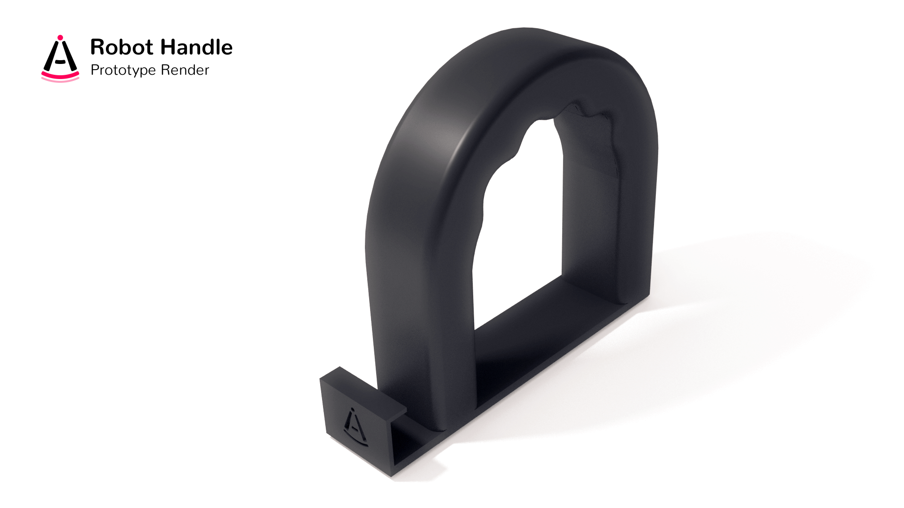
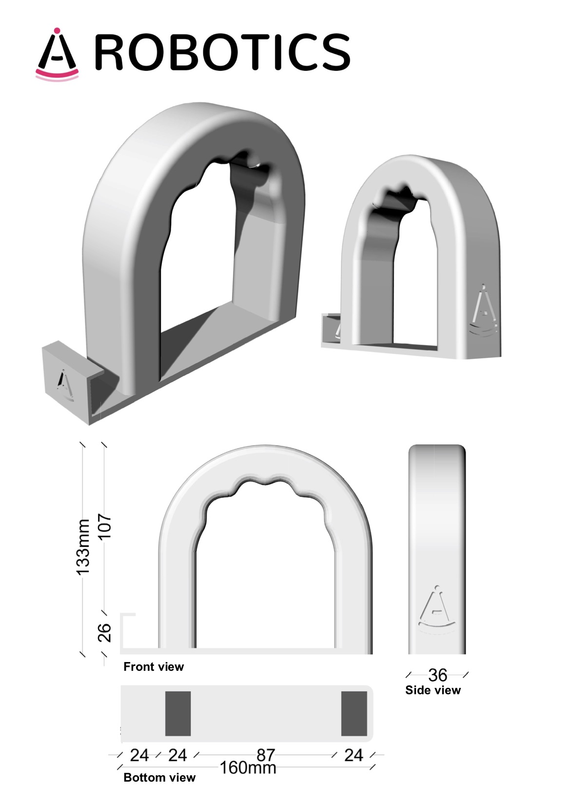

To allow users to follow the robot without seeing it, we've started designing an ergonomic handle to affix to the robot's arm:
On the side, we have included a support for the headphones. The handle will be fixed on the gripper’s fingers using the two holes at the bottom. The below drawings show the 3-D model and its dimensions (click for fullview):
